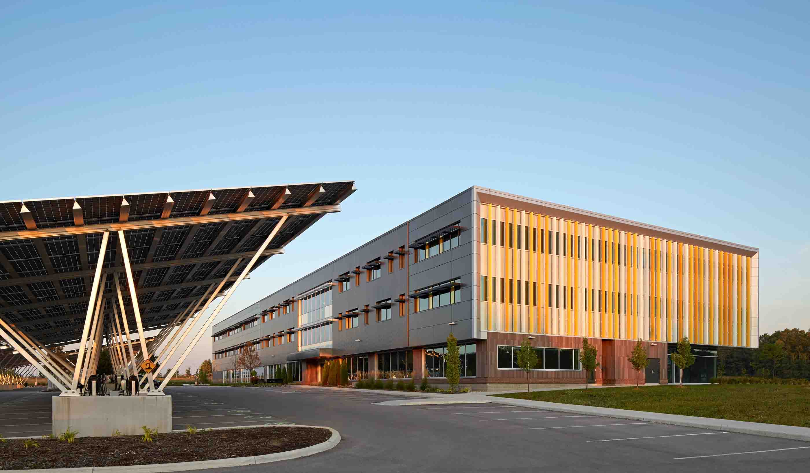
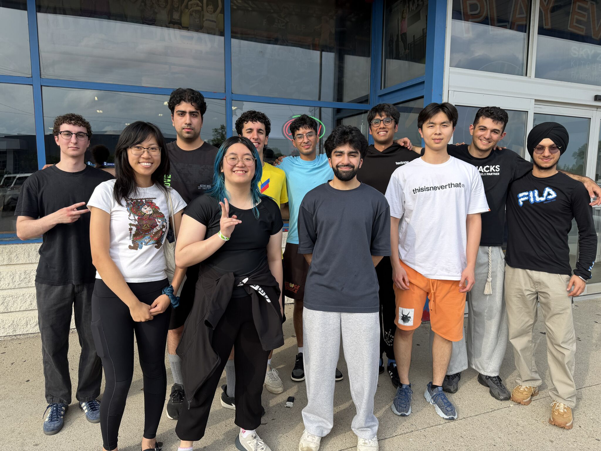
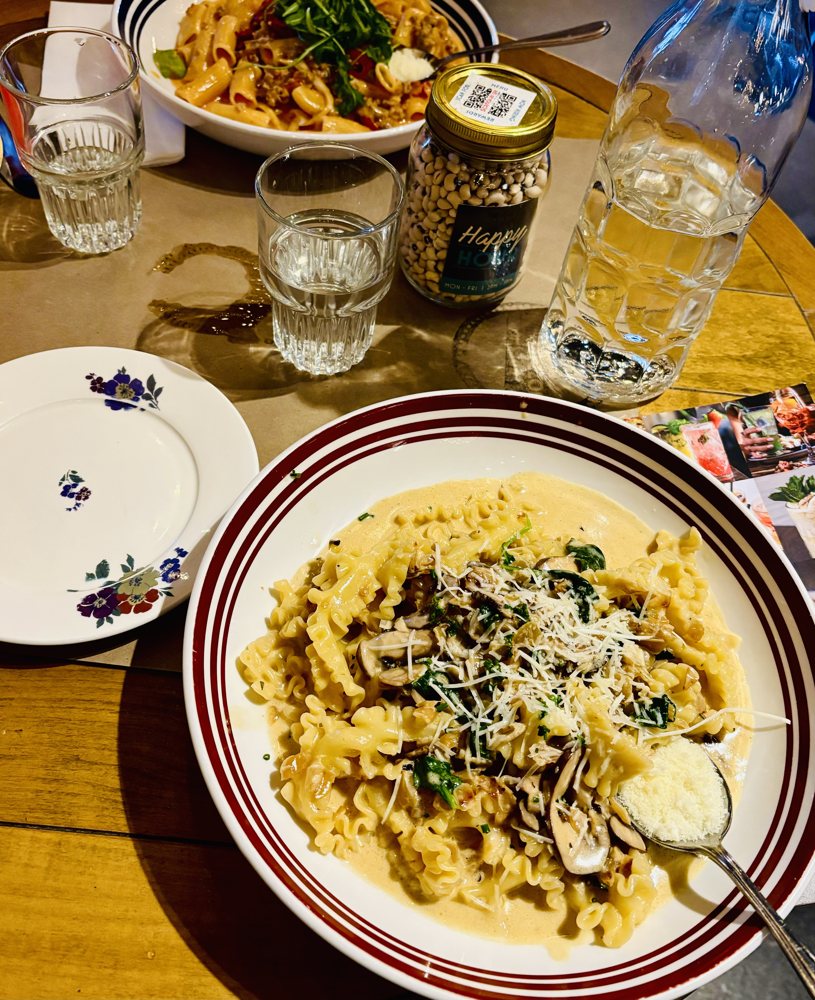
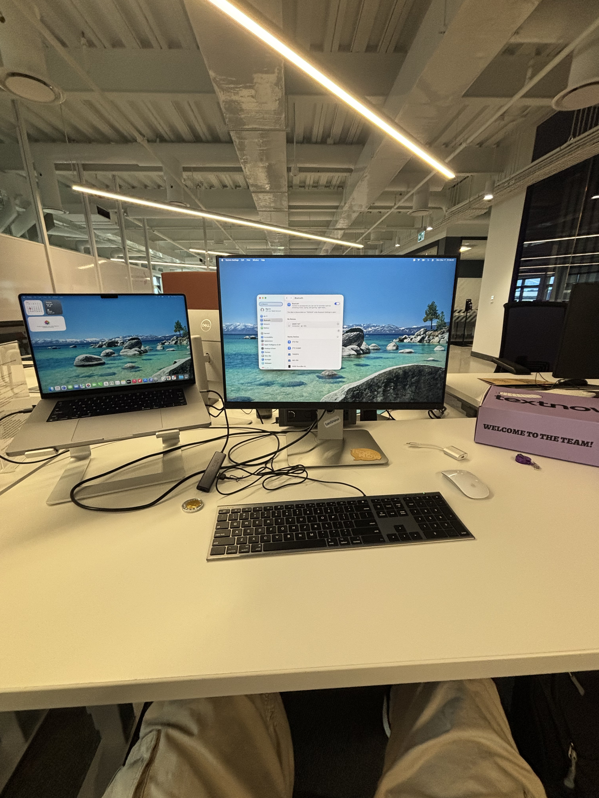

This report summarizes my experience during my first co-op work term at TextNow, where I worked as a Full-Stack Software Developer Intern in Waterloo from May to August 2026. The company has offices in both Canada and the USA. The US office is based in San Francisco. I was working from the Canada office in Waterloo, which is also the company's headquarters. Over the term, I worked across full-stack software development, production support, data investigations, and internal tooling. This report outlines my responsibilities, contributions, the goals I set, and the skills I built during the term.
02 / 05
The Employer
TextNow is a telecom company that provides calling and messaging services through its mobile and web apps. It has millions of users. Its products rely on software systems that need to stay reliable while serving a very large number of people. That is why areas like web development, backend services, data handling, testing, and production support are such important parts of the company's work.
We had a hybrid schedule, with three days a week working from the office. This gave me regular opportunities to collaborate with my team in person, ask questions, participate in discussions, sit in on meetings, and see how different roles all contribute to the same product. Those conversations were often really useful when I needed context on a task or wanted to check that I was going about a problem the right way.

The TextNow office in Waterloo, Ontario.
Workplace and team culture
While most of my co-op experience was focused on my projects and development work, there was also a social side to working at TextNow that I really enjoyed. It gave me a chance to step away from my usual tasks, spend time with my coworkers, and get to know people outside of my team. Having those opportunities made the overall experience feel more welcoming and helped me feel like I was part of the workplace rather than just a co-op student.
TextNow also organized different activities where co-op students could spend time together outside of their regular projects.
One of the co-op socials was held at Sky Zone, an indoor trampoline park, where the entire intern group took part together. I also had the opportunity to go out for dinner with my team at PUBLIC Kitchen & Bar in Kitchener. The dinner was hosted by the manager of my team. It was a nice way for us to take a break from work and celebrate the hard work we had put into our projects. It gave everyone a chance to relax, have some fun, and spend time together outside of the usual work environment.

Co-op social with the intern group at Sky Zone.

Dinner with my team at PUBLIC Kitchen & Bar in Kitchener.
03 / 05
Job Description
As a Full-Stack Software Developer Intern, I worked on both user-facing and backend work. My main responsibilities were building new features, handling deployments, investigating production behaviour, reviewing data tied to reported issues, and improving internal tools. Across these tasks, I worked with technologies such as React, Ruby, JavaScript, and Python, alongside other tools used throughout the company’s systems. A big part of the role was also talking to other teams to understand what they needed, then planning how to build it and get it launched. The role pushed me to understand how the separate parts of an application fit together instead of looking at each part on its own.
A typical task started with a ticket, a report, or a problem that needed looking into. I would first gather enough context to understand what the expected behaviour was. Then I would go through the relevant code and any available data, talk through the requirements with teammates, and narrow the problem down before making a change. Once I had made the change, I tested it, opened a pull request, responded to review comments, made any fixes that were needed, and then deployed it.
The job took patience when the cause of an issue was not obvious right away. I learned not to change code based on my first guess. Instead I tried to reproduce the behaviour, compare what should happen against what actually happened, and use that evidence to cut down the list of possible causes.
My university courses gave me a base in programming, testing, and software design. The workplace made me apply those ideas in a much bigger codebase with set patterns and review standards. Reading unfamiliar code, picking up the business context, and making a safe change were skills I built on the job.

Working from the TextNow Waterloo office.
Innovation Challenge
During the term, the company ran an innovation challenge for the interns. The idea was to find a problem and build a solution for it or come up with something new and innovative and then present it to the company. I took part in it and worked on my own idea from the problem all the way to a working solution. My idea was accepted and deployed, and it started getting real users on the very first day. This was one of the highlights of my term because it let me take something from a rough concept to a live feature that people actually used, and it showed me what it looks like to own an idea end to end.
04 / 05
Goals
GOAL 01
Build fluency with the tools, technologies, and development workflows used at TextNow.
Starting in a new development environment meant learning unfamiliar tools, processes, and parts of the codebase. At the beginning of the term, I needed guidance to understand where changes belonged and how work moved through development, code review, testing, and deployment. By the end of the term, I could take most assigned tasks through this process with much less support. I was able to locate the relevant code, follow the team’s standards, respond to review feedback, and deploy completed changes. I consider this goal successfully completed, although I will continue improving how quickly I understand unfamiliar systems. This experience will help me adapt more efficiently to the tools and workflows used by future development teams.
GOAL 02
Strengthen my ability to investigate, debug, and solve technical problems independently.
As I became more familiar with the codebase, I was able to take a more structured approach to unfamiliar technical issues instead of relying on others to point me toward the answer. I learned to reproduce problems, trace them through the relevant parts of the system, identify their root cause, and test potential solutions before submitting a fix. Feedback from teammates and senior engineers helped me improve this process, and I became increasingly comfortable taking an issue from investigation to deployment.
GOAL 03
Develop stronger confidence and clarity when communicating technical information to both technical and non-technical teammates.
Early on, I found it challenging to communicate technical work concisely, particularly when explaining unfamiliar systems or asking for help. Feedback from my team helped me improve how I structured my updates and how I approached questions during standups, meetings, and planning discussions. I became more intentional about explaining the context behind an issue, clearly communicating what I had already investigated, and adjusting my explanations depending on who I was speaking with. The clearest sign of progress was that I could give more focused updates and ask better questions without overexplaining. I still want to become more concise, especially when communicating with people who do not work directly with the code.
05 / 05
Conclusion
My co-op term at TextNow gave me the opportunity to contribute to a platform used by millions of users.
I got better at working across frontend and backend code, investigating issues using both code and data, and taking changes through testing and review. I also saw how much clear communication matters when several people share responsibility for the same product.
The term made me more confident working in an unfamiliar codebase and more careful about how I approach technical problems. I now spend more time confirming the problem before settling on a solution, and I am better at explaining my reasoning when I ask for feedback.
This experience will help me in my next work term because I can join a new team with a clearer understanding of professional development practices. I know how to learn from an existing system, use review feedback, and take on more ownership as my knowledge grows.
I want to thank my manager, my mentors, my teammates, and the other co-op students at TextNow for all their support throughout the term. Their feedback and their willingness to answer my questions played a big part in what I learned. I am grateful that I got to begin my co-op journey with this group.